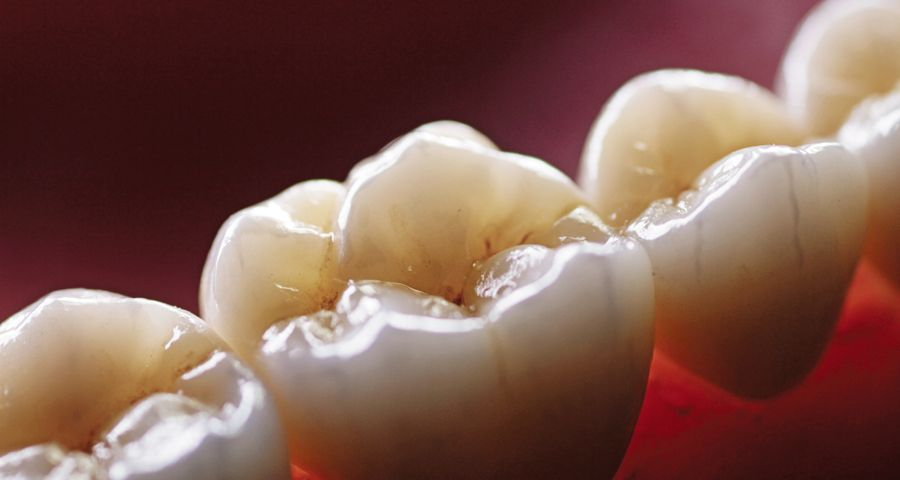
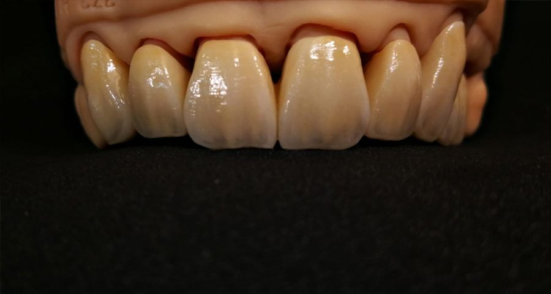
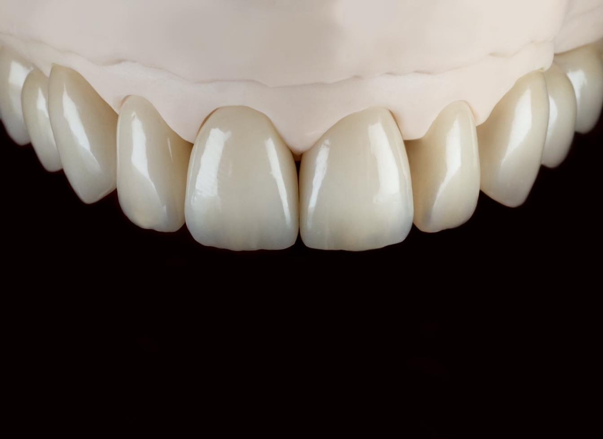
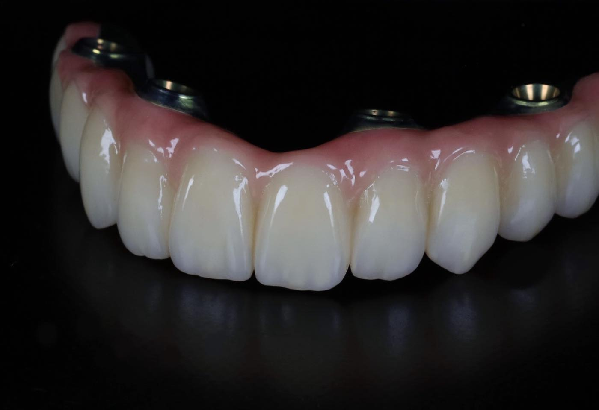
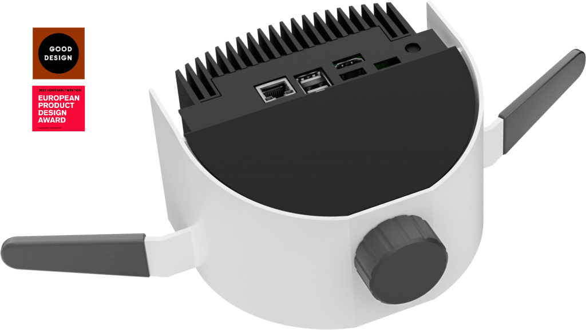

SZOLGÁLTATÁS
OXO technológia
Extraorális implantátumpozíció-meghatározás a rendelő és a labor együttműködésében.
Az OXO szolgáltatásMESHDENT · FOGTECHNIKAI LABOR
Szakértelem a mosoly mögött.
Fogpótlások digitális tervezése és készítése, személyes együttműködésben a fogorvosokkal.
AMIBEN SEGÍTÜNK
Koronák, hidak, implantátumos pótlások és fogszabályozó sínek. Találja meg az adott munkához illő megoldást.
CAD/CAM · Egyedi fogpótlás

Digitális váz · Egyedi porcelánleplezés

Teljes anatómia · Többrétegű cirkónia

Átlátszó sínek · Digitális tervezés

Solid Full Arch Zirconia · All-on-X

Extraorális szkennelés · Rendelői együttműködés

ÍGY DOLGOZUNK EGYÜTT
A rendelőben felvett digitális lenyomattól a kész fogpótlásig egyeztetünk a munka részleteiről.
A folyamat intraorális szkenneléssel indul a rendelőben.
A digitális adatok a MeshDent laborba kerülnek.
A fogpótlás formája digitális tervezőszoftverben készül.
A tervezett munka digitális gyártási folyamaton halad át.
A munkatípusnak megfelelő leplezés vagy festés következik.
Az elkészült fogpótlás a rendelőbe kerül.
DIGITÁLIS LEHETŐSÉGEK
Ismerje meg az OXO szolgáltatást és a Freedom Air eszközt.
SZOLGÁLTATÁS
Extraorális implantátumpozíció-meghatározás a rendelő és a labor együttműködésében.
Az OXO szolgáltatásESZKÖZ
Intraorális szkennelés és fotogrammetria. A meglévő Freedom Air oldal saját helyet kap.
A Freedom Air oldala
A LABOR MUNKÁI
BESZÉLJÜNK RÓLA
Új munkát tervez, vagy a digitális együttműködésről kérdezne? Keresse közvetlenül a MeshDent csapatát.
Kapcsolat a laborral